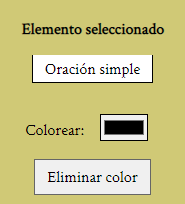

Editar
Para editar un elemento lo más cómodo es hacer click derecho sobre él, pero también puedes seleccionarlo y luego modificarlo desde la pestaña "Editar".
Colorear
Puedes cambiar el color de cualquier elemento haciendo click sobre él seguido de hacer click en el botón adyacente a "Colorear:"

Puedes eliminar el color y volver a establecer el color general para ese elemento haciendo click en "Eliminar color".
Acciones
A continuación una lista detallada sobre las acciones que puedes realizar sobre los elementos.
- Subordinar a: Subordina el elemento seleccionado al elemento que selecciones posteriormente [Sólo es posible subordinar elementos adyacentes, si quieres indicar que un elemento pertenece a otro más lejano utiliza una Referencia].
- Sacar del grupo: Extrae el elemento del grupo [Sólo funciona con el primer y el último elemento dentro de un grupo].
- Eliminar elemento: Elimina definitivamente el elemento, en caso de ser un grupo su contenido permanece.
- Crear grupo: Crea un nuevo grupo y subordina el elemento seleccionado a él.
- Subordinar todos los elementos anteriores: Subordina a un grupo todos los elementos posteriores al él [Sólo funciona en grupos].
- Subordinar todos los elementos posteriores: Subordina a un grupo todos los elementos anteriores al él [Sólo funciona en grupos].
- Eliminar grupo y su contenido: Elimina un grupo y todos los grupos inherentes a él. [Sólo funciona en grupos].
- Hacer referencia a: Crea una referencia desde el elemento seleccionado hasta el elemento que selecciones posterioremente [Sólo se crea sobre palabras]. (Se visualiza como una flecha, que tiene el mismo color que la palabra).
- Eliminar referencias: Elimina todas las referencias de un elemento.
- Insertar palabra antes: Inserta una palabra antes de un elemento. Aparecerá un cuadro de texto para preguntarte por la palabra.
- Insertar palabra después: Inserta una palabra después de un elemento. Aparecerá un cuadro de texto para preguntarte por la palabra.
- Insertar palabra al principio de la oración: Idem.
- Insertar palabra al final de la oración: Idem.